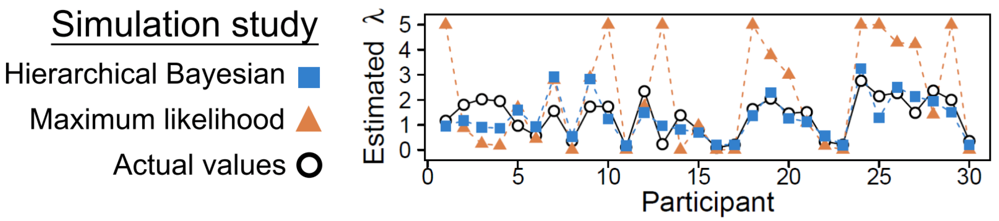
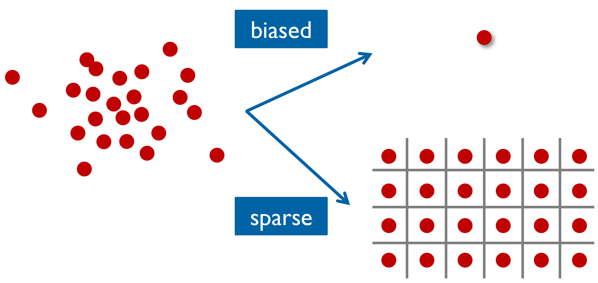
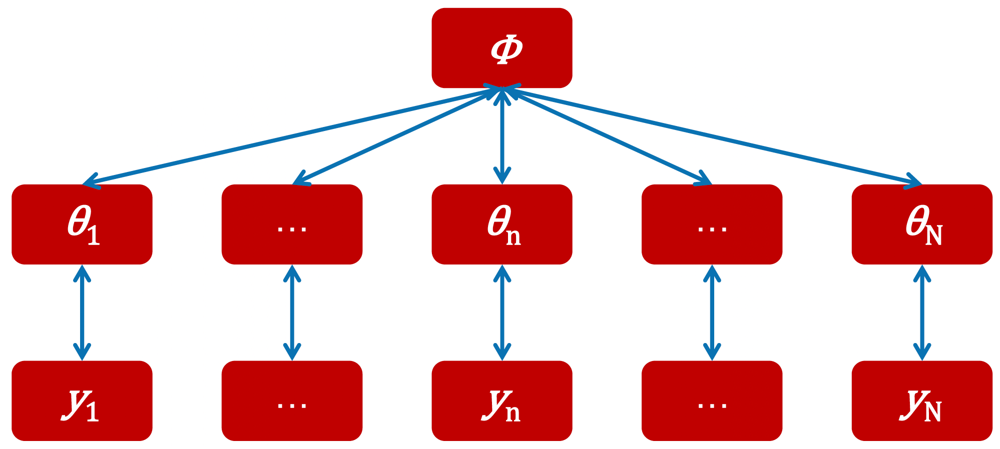
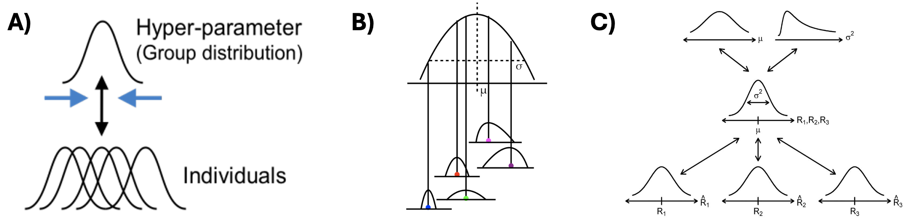
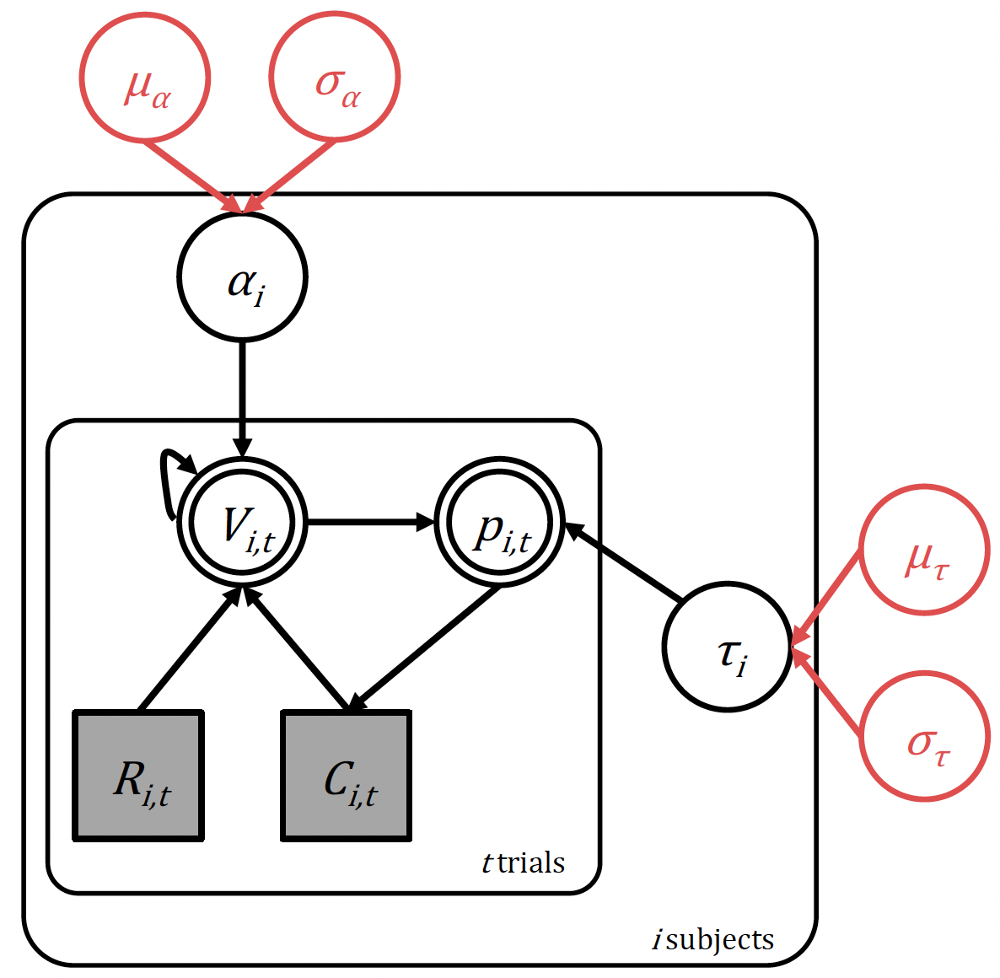
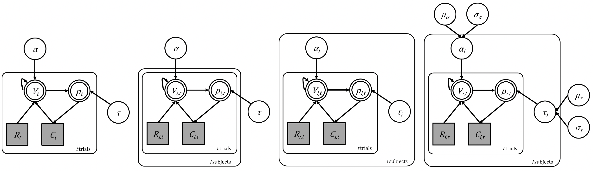
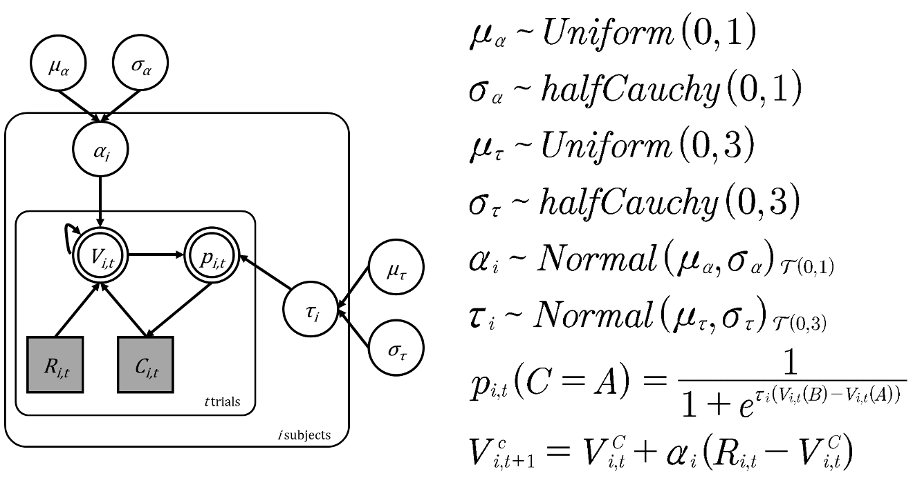

Hierarchical Bayesian modeling in Stan
Implementing a hierarchical version of the Rescorla-Wagner model
Model code and R scripts for this workshop are located in the (/workshops/06.reinforcement_learning) directory.
At the end of the last workshop, we explored two approaches to modeling multiple subjects in reinforcement learning: using a subject-loop with fixed parameters across all subjects, and fitting each subject independently. While both approaches have their merits, they also have limitations when accurately modeling subjects.
Let’s examine why we need a more sophisticated approach by looking at some simulation results1:

Hierarchical Bayesian analysis shows much less discrepancy with actual values compared to maximum likelihood estimates
The diagram shows results from a simulation analysis ultimately demonstrating that when estimated with hierarchical Bayesian analysis, parameter estimates (for a loss aversion parameter \(\lambda\)) show much less discrepancy with actual values compared to those estimated with maximum likelihood estimation (MLE). Compared to MLE, hierarchical Bayesian analysis can also be sensitive to individual differences when there is enough information.
As we can see from these results, treating all subjects as identical (fixed effects) or completely independent (random effects) represents two extremes of a spectrum (depicted below):

Fixed effects (top) and random effects (bottom) approaches to group-level modeling
When we use a subject-loop with fixed parameters (as we did in our previous workshop), we’re essentially saying that everyone learns and makes decisions in exactly the same way. This approach forces us to find “average” parameters that might not actually represent any real person’s behaviour well.
On the other hand, when we fit each subject independently (random effects), we ignore an important fact: while people are different, they’re not completely different. As a consequence, we can end up with very noisy parameter estimates, especially if we have limited data per person.
Hierarchical models: an ideal middle ground
Hierarchical (Bayesian) modeling offers a solution by finding a middle ground between these two extremes, by taking into account that whilst people are different, their parameters are likely to come from some common distribution.
Hierarchical models:
Acknowledge individual differences by giving each person their own parameters
Recognize similarities between people by assuming these parameters come from a shared group-level distribution
Use group-level information to improve individual estimates, especially when data is limited
We can demonstrate the structure of this hierarchical approach in the diagram below:

Parameters and observed data in the hierarchical structure
The hierarchical structure consists of three main levels:
At the bottom level, we have \(y_1\) through \(y_N\), representing the observed data from each individual subject.
In the middle level, we have \(\theta_1\) through \(\theta_N\), representing the subject-level parameters (like learning rates or inverse temperatures for each person).
At the top level, we have \(\phi\), representing the population-level parameters that describe how individual parameters are distributed across the group.
What makes this approach powerful is how these levels interact during parameter estimation, with the estimation of individual-level parameters \((\theta)\) informed by two sources simultaneously: the subject’s own data \((y)\) and the group-level distribution \((\phi)\). Similarly, the group-level parameter (\(\phi\)) are estimated based on the patterns observed across all individual parameter estimates. This creates a dynamic interaction where each level simultaneously informs the others during the estimation process.
In our reinforcement learning context, we might assume that learning rates across the population follow a normal distribution. In this case, we can replace \(\phi\) with two parameters:
- \(\mu_\theta\) would represent the average learning rate in the population,
- while \(\sigma_\theta\) would represent how much variation exists between individuals.
However, we could choose different distributions if we had reason to believe the parameters follow a different pattern at the group level.
This simultaneous estimation at all levels allows the model to find the right balance between individual differences and group-level patterns, leading to more robust parameter estimates than we could achieve by analyzing each subject in isolation or treating all subjects as identical.
We can also describe the hierarchical approach in terms of Bayes’ theorem. Recall that in Bayesian analysis, we aim to update our prior beliefs about parameters using observed data to arrive at posterior estimates. With hierarchical modeling, we’re simply extending this approach to handle multiple levels of parameters - both individual and group-level - simultaneously.
This multilevel structure described through Bayes’ theorem is:
\[P(\Theta, \Phi | D) = \frac{P(D|\Theta, \Phi)P(\Theta, \Phi)}{P(D)} \propto P(D|\Theta)P(\Theta|\Phi)P(\Phi)\]
This equation captures the three levels of our hierarchical structure:
\(P(D|\Theta)\) the data level: the likelihood of observing our choice data given each subject’s parameters
\(P(\Theta|\Phi)\) the individual parameter level: how individual parameters \((\Theta, \Phi)\) vary around the population parameters
\(P(\Phi)\) the population level: our prior beliefs about the population-level parameters (e.g., group mean and variance)
The multiplication of these components during estimation reflects how information flows between levels in our hierarchical structure, with each level informing the others simultaneously.
Another (more intuitive) way to understand the hierarchical appraoch is to understand the relationship between the distributions of both individual and group-level parameters:

The relationship between individual and group-level parameters in hierarchical models
A) This plot shows that each individual’s parameter estimate isn’t just a single point - it’s a full distribution, as we use a Bayesian approach. This captures our uncertainty about each person’s true parameter value. The overlapping distributions at the bottom represent different individuals’ parameter estimates, while the upper curve represents the group-level distribution from which these individual parameters are drawn.
B) This plot shows how individual estimates are nested within the group-level distribution. The \(\mu\) represents the group mean, and \(\sigma\) represents the group-level variance. Each individual’s distribution is centered at a different point, but all are constrained by the overarching group-level distribution shape.
C) This diagram shows how information flows through the hierarchy. At the top, we set hyperpriors (priors for group-level distributions) for \(\mu\) and \(\sigma^2\) which shape the group-level distribution in the middle, which then influence individual parameter distributions \((R_1, R_2, R_3)\) at the bottom.
Building a hierarchical Rescorla-Wagner model
Given our current progress with applying RL models in Stan, making the model hierarchical isn’t too difficult (conceptually at least!)
The hierarchical model - and how it builds upon our previous model which fits multiple individuals independently - is depicted graphically below:

The hierarchical Rescorla-Wagner model with hyperparameters highlighted in red
We now simply state that the two parameters of interest, the learning rate \(\alpha\), and inverse temperature \(τ\), come from a group level distribution. We will assume in this case that this is normally-distributed at the population level, and so define four hyperparameters:
Learning rate: with group-level mean \((\mu_\alpha)\) and group-level standard deviation \((\sigma_\alpha)\)
Inverse temperature: with group-level mean \((\mu_\tau)\) and group-level standard deviation \((\sigma_\tau)\)
Model building both conceptually and in Stan is best acheived iteratively. We start with simple models and layer complexity. You can see that in the diagram below:

The evolution of our RL models from single subject to hierarchical multi-subject
We started with the basic Rescorla-Wagner model in a single subject (far left) then adapted the model to run across subjects in a fixed effects way (second from left) and then by fitting them all independently (third from left). We now look to implement a hierarchical structure (far right). Remember that in all cases, the underlying cognitive model is the same! We are simply changing how the parameters are estimated.
Looking at the hierarchical model, we can see that this model now consists of six priors, the value update and softmax choice rule:

The structure, parameters and priors of the hierarchical model
Remember that the core computational mechanisms of our reinforcement learning model - the value update equation (Rescorla-Wagner learning) and the softmax choice rule - remain unchanged in the hierarchical version:
Value update:
\[V_{i,t+1}^c = V_{i,t}^c + \alpha_i(R_{i,t} - V_{i,t}^c)\] Choice probability:
\[p_{i,t}(C=A) = \frac{1}{1 + e^{\tau_i(V_{i,t}(B)-V_{i,t}(A))}}\]
What changes is how we structure the parameters \(\alpha\) (learning rate) and \(\tau\) (inverse temperature) across subjects. Instead of estimating these parameters independently for each subject, we create a hierarchical structure with multiple levels.
Group-level parameters
At the highest level, we have our group-level parameters:
For the group means \((\mu_\alpha\) and \(\mu_\tau)\) we use uniform distributions because we want to remain uncertain about where the average learning rate and inverse temperature might lie within their possible ranges. This is known as a ‘non-informative’ or ‘flat’ prior, as we’re saying all values within the defined ranges are equally likely.
\[\mu_\alpha \sim \text{Uniform}(0,1)\] \[\mu_\tau \sim \text{Uniform}(0,3)\]
For the group standard deviations \((\sigma_\alpha)\) and \((\sigma_\tau)\) we use the half-Cauchy distribution because it’s particularly well-suited for standard deviation parameters. Remember that while similar to the normal distribution, the half-Cauchy has heavier tails.
\[\sigma_\alpha \sim \text{halfCauchy}(0,1)\] \[\sigma_\tau \sim \text{halfCauchy}(0,3)\]
Individual-level parameters
Each subject’s individual parameters are drawn from a normal distribution centered on the group mean \((\mu)\) with spread determined by the group standard deviation \((\sigma)\).
\[\alpha_i \sim \text{Normal}(\mu_\alpha, \sigma_\alpha)_{\mathcal{T}(0,1)}\] \[\tau_i \sim \text{Normal}(\mu_\tau, \sigma_\tau)_{\mathcal{T}(0,3)}\]
However, notice the subscript \(\mathcal{T}\) with these distributions - this indicates these are truncated normal distributions. We need this truncation because the normal distribution extends infinitely in both directions, so truncating them ensures our parameters stay bounded.
Bounding parameters - whilst often theoretically necessary (like keeping learning rates between 0 and 1) - can sometimes create challenges for MCMC sampling. When a parameter gets close to its boundary, many of the MCMC’s proposed steps will be rejected because they would land outside the valid range. This is like trying to take random walks near a wall - many of the steps would simply hit the wall. Monitoring your chain mixing, convergence diagnostics and parameter estimates can help to determine whether this is the case.
The priors used in this tutorial are chosen for pedagogical reasons and may not be appropriate for your particular research question. You should set your priors according to several factors including your specific research context, theoretical understanding, and existing literature in your field.
Creating the hierarchical Rescorla-Wagner model in Stan
The conceptual basis for the hierarchical model outlined above has been translated into the appropriate Stan model _scripts/reinforcement_learning_mp_hrch_model.stan.
Within this model, the data and transformed data blocks remain unchanged, but we now introduce group-level parameters in the parameters block:
parameters {
real<lower=0,upper=1> lr_mu;
real<lower=0,upper=3> tau_mu;
real<lower=0> lr_sd;
real<lower=0> tau_sd;
real<lower=0,upper=1> lr[nSubjects];
real<lower=0,upper=3> tau[nSubjects];
}Where we declare our parameters:
lr_muandtau_muare our group-level means (\(\mu_\alpha\) and \(\mu_\tau\))lr_sd and tau_sdare our group-level standard deviations (\(\sigma_\alpha\) and \(\sigma_\tau\))The arrays
lr[nSubjects]andtau[nSubjects]hold individual-level parameters for each subject.
Remember that the parameters block declares variables and their bounds, but not their probability distributions. Therefore we define the probability distributions (priors) in the model block:
model {
lr_sd ~ cauchy(0,1);
tau_sd ~ cauchy(0,3);
// give the prior here: how individual-level parameters are connected to the group-level parameters
lr ~ normal(lr_mu, lr_sd);
tau ~ normal(tau_mu, tau_sd);
...
...
The lines
lr_sd ~ cauchy(0,1)andtau_sd ~ cauchy(0,3)specify our Cauchy priors for the group-level standard deviations. The zero-bounded constraint in the parameters block automatically makes this a half-Cauchy (only positive values).lr ~ normal(lr_mu, lr_sd)andtau ~ normal(tau_mu, tau_sd)implement the individual-level prior parameter distributions. The bounds specified in theparametersblock automatically make these truncated normal distributions.
Recall that Stan implicitly sets a uniform prior if a distribution if not explicitly stated (i.e., for lr_mu and tau_mu in this model).
1. Run the hierarchical model reinforcement_learning_mp_hrch_model.stan using the script reinforcement_learning_multi_parm_main.R. Examine the posterior density distribution and violin plots generated.
Remember to only highlight and run the appropriate sections of the script!
Footnotes
Ahn, W. Y., Krawitz, A., Kim, W., Busemeyer, J. R., & Brown, J. W. (2013). A model-based fMRI analysis with hierarchical Bayesian parameter estimation.↩︎